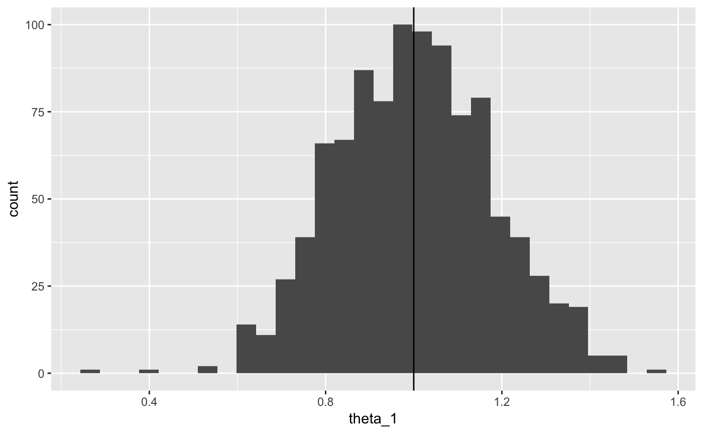

scoringTools packagevignettes/scoringTools.Rmd
scoringTools.RmdThis package has been developed as part of a CIFRE PhD, a special PhD contract in France which is for the most part financed by a company. This company subsequently gets to choose which subject(s) are tackled.
This research has been financed by Crédit Agricole Consumer Finance (CA CF), subsidiary of the Crédit Agricole Group which provides all kinds of banking and insurance services. CA CF focuses on consumer loans, ranging from luxury cars to small electronics.
In order to accept / reject loan applications more efficiently (both quicker and to select better applicants), most financial institutions resort to Credit Scoring: given the applicant’s characteristics he/she is given a Credit Score, which has been statistically designed using previously accepted applicants, and which partly decides whether the financial institution will grant the loan or not.
In practice, the statistical modeler has historical data about each customer’s characteristics. For obvious reasons, only data available at the time of inquiry must be used to build a future application scorecard. Those data often take the form of a well-structured table with one line per client alongside their performance (did they pay back their loan or not?) as can be seen in the following table:
| Job | Habitation | Time_in_job | Children | Family_status | Default |
|---|---|---|---|---|---|
| Craftsman | Owner | 10 | 0 | Divorced | No |
| Technician | Renter | 20 | 1 | Widower | No |
| Executive | Starter | 5 | 2 | Single | Yes |
| Office employee | By family | 2 | 3 | Married | No |
The variable to predict, here denoted by , is an active research field and we will not discuss it here. We suppose we already have a binary random variable \(Y\) from which we have \(n\) observations \(\mathbf{y} = (y_i)_1^n\).
The \(d\) predictive features, here for example the job, habitation situation, etc., are usually socio-demographic features asked by the financial institutions at the time of application. They are denoted by the random vector \(\boldsymbol{X} = (X_j)_1^d\) and as for \(Y\) we have \(n\) observations \(\mathbf{x}=(x_i)_1^n\).
We suppose that observations \((\mathbf{x},\mathbf{y})\) come from an unknown distribution \(p(x,y)\) which is not directly of interest. Our interest lies in the conditional probability of a client with characteristics \(\boldsymbol{x}\) of paying back his loan, i.e. \(p(y|\boldsymbol{x})\), also unknown.
In the context of Credit Scoring, we historically stick to logistic regression, for various reasons out of the scope of this vignette. The logistic regression model assumes the following relation between \(\boldsymbol{X}\) (supposed continuous here) and \(Y\): \[\ln \left( \frac{p_{\boldsymbol{\theta}}(Y=1|\boldsymbol{x})}{p_{\boldsymbol{\theta}}(Y=0|\boldsymbol{x})} \right) = (1, \boldsymbol{x})'{\boldsymbol{\theta}}\]
We would like to have the ‘‘best’’ model compared to the true \(p(y|\boldsymbol{x})\) from which we only have samples. Had we access to the true underlying model, we would like to minimize, w.r.t. \({\boldsymbol{\theta}}\), \(H_{\boldsymbol{\theta}} = \mathbb(E)_{(X,Y) \sim p}[\ln(p_{\boldsymbol{\theta}}(Y|\boldsymbol{X}))]\). Since this is not possible, we approximate this criterion by maximizing, w.r.t. \(\theta\), the likelihood \(\ell({\boldsymbol{\theta}};\mathbf{x},\mathbf{y}) = \sum_{i=1}^n \ln(p_{\boldsymbol{\theta}}(y_i|\boldsymbol{x}_i))\).
In R, this is done by fitting a model to the data:
library(scoringTools)
scoring_model <- glm(Default ~ ., data = lendingClub, family = binomial(link = "logit"))## Warning: glm.fit: fitted probabilities numerically 0 or 1 occurredWe can now focus on the regression coefficients \(\boldsymbol{\theta}\):
## (Intercept) Amount_Requested
## 5.446254e-01 5.198134e-06
## Loan_Purposecredit_card Loan_Purposedebt_consolidation
## -2.161336e-01 -4.537949e-01
## Loan_Purposeeducational Loan_Purposehome_improvement
## 1.858680e-01 -6.656963e-01
## Loan_Purposehouse Loan_Purposemajor_purchase
## -1.278938e+00 -1.726151e+00
## Loan_Purposemedical Loan_Purposemoving
## -7.204768e-01 -4.125148e-01
## Loan_Purposeother Loan_Purposerenewable_energy
## -1.044591e-01 -1.902471e+01
## Loan_Purposesmall_business Loan_Purposevacation
## -7.710864e-01 -8.271925e-01
## Loan_Purposewedding Loan_Length
## -4.670372e-01 -8.072343e-03
## Debt_To_Income_Ratio Home_OwnershipMORTAGE
## 4.673087e-04 -9.385231e-01
## Home_OwnershipMORTGAE Home_OwnershipMORTGAG
## -4.822148e-02 -1.559521e+00
## Home_OwnershipMORTGAGE Home_OwnershipMORTGGE
## -9.395086e-01 -1.053046e+00
## Home_OwnershipMOTGAGE Home_OwnershipMRTGAGE
## -1.320655e-01 7.277748e-02
## Home_OwnershipORTGAGE Home_OwnershipOTHER
## -4.190851e-01 -2.067367e+01
## Home_OwnershipOWN Home_OwnershipRENT
## -1.052071e+00 -7.275610e-01
## Open_CREDIT_Lines Revolving_CREDIT_Balance
## -1.537008e-02 5.409573e-06
## Inquiries_in_the_Last_6_Months Monthly_Income
## -5.478806e-02 1.679455e-05
## Employment_Length StateAL
## 2.190715e-02 -9.302735e-01
## StateAR StateAZ
## -2.001419e+01 -8.498573e-01
## StateCA StateCO
## -1.324136e+00 -8.503792e-01
## StateCT StateDC
## -1.006930e+00 -8.278092e-01
## StateDE StateFL
## -1.813406e+01 -7.749171e-01
## StateGA StateHI
## -1.658919e+00 -8.162135e-01
## StateIA StateIL
## -2.456610e+00 -8.436800e-01
## StateIN StateKS
## -1.028000e+00 -1.184442e+00
## StateKY StateLA
## -2.489800e+00 -1.522087e+00
## StateMA StateMD
## -2.233885e+00 -6.024556e-01
## StateMI StateMN
## -4.866130e-02 -1.755743e+00
## StateMO StateMS
## -1.490269e+00 -1.272611e+00
## StateMT StateNC
## -2.953696e-01 -1.296718e+00
## StateNH StateNJ
## -9.519204e-01 -1.139183e+00
## StateNM StateNV
## -5.655698e-01 -1.188136e+00
## StateNY StateOH
## -6.806718e-01 -7.549876e-01
## StateOK StateOR
## -2.235123e+00 -1.849957e+00
## StatePA StateRI
## -8.662468e-01 -1.162867e-01
## StateSC StateSD
## -1.620496e+00 1.488559e+01
## StateTX StateUT
## -1.195268e+00 -1.546485e+00
## StateVA StateVT
## -8.237064e-01 3.419687e-01
## StateWA StateWI
## -1.026220e+00 -5.139766e-01
## StateWV StateWY
## -8.625548e-01 -1.224568e+00
## Interest_Rate FICO_Range645-649
## 3.282162e-02 -1.933897e+01
## FICO_Range650-654 FICO_Range655-659
## 2.331851e+01 2.633920e+00
## FICO_Range660-664 FICO_Range665-669
## 9.115198e-01 5.946684e-01
## FICO_Range670-674 FICO_Range675-679
## 1.004201e+00 9.227298e-01
## FICO_Range680-684 FICO_Range685-689
## 7.418759e-01 1.059893e+00
## FICO_Range690-694 FICO_Range695-699
## 6.573794e-01 -1.914143e+01
## FICO_Range700-704 FICO_Range705-709
## -1.916224e+01 -1.916976e+01
## FICO_Range710-714 FICO_Range715-719
## -1.907579e+01 -3.016283e+01
## FICO_Range720-724 FICO_Range725-729
## -1.890553e+01 -3.031735e+01
## FICO_Range730-734 FICO_Range735-739
## -1.903904e+01 -1.898787e+01
## FICO_Range740-744 FICO_Range745-749
## -1.901698e+01 -1.899618e+01
## FICO_Range750-754 FICO_Range755-759
## -1.904364e+01 -1.898244e+01
## FICO_Range760-764 FICO_Range765-769
## -1.883702e+01 -1.871614e+01
## FICO_Range770-774 FICO_Range775-779
## -1.888484e+01 -1.870410e+01
## FICO_Range780-784 FICO_Range785-789
## -1.877299e+01 -1.889972e+01
## FICO_Range790-794 FICO_Range795-799
## -1.882304e+01 -1.947507e+01
## FICO_Range800-804 FICO_Range805-809
## -1.877842e+01 -3.202823e+01
## FICO_Range810-814 FICO_Range815-819
## -1.877796e+01 -1.899147e+01
## FICO_Range820-824 FICO_Range830-834
## -1.776919e+01 -1.902438e+01
## Age
## -3.512107e-03and the deviance at this estimation of \(\boldsymbol{\theta}\): [1] 1103.43
From this, it seems that Credit Scoring is pretty straightforward when the data is at hand.
Nevertheless, there are a few theoretical limitations of the current approach, e.g.:
Two problems have been tackled so far in the Credit Scoring framework:
We released two other packages:
Other packages focus on Credit Scoring, see e.g. this review paper.
From all applicants who get a Credit Score, there are three interesting sub-populations: the financed clients, who were granted a loan, the rejected applicants, who were rejected either by business rules (e.g. over-indebtedness) or because of a low Credit Score, and the not-taking up applicants who were offered a loan but decided not to take it (e.g. they don’t need it anymore or they went to a competitor).
Obviously, the performance variable \(Y\) is observed only for financed clients so that we have \(n\) observations of financed clients \((\boldsymbol{x}_i,y_i)_1^n\) and \(n'\) observations of not financed clients for who we only have the characteristics \((\boldsymbol{x}_i)_1^{n'}\).
Strictly speaking, we have observations from \(p(\boldsymbol{x},y,Z=f)\) and by fitting a logistic regression to this data, we subsequently estimate \(p(y|\boldsymbol{x},Z=f)\) which is quite ‘‘different’’ from \(p(y|\boldsymbol{x})\). Since the Credit Score is to be applied to the whole population to decide whether to accept/reject clients, it seems that this can lead to a biased model, even asymptotically.
There are three important keys to understand if the resulting model is biased:
Our theoretical findings on this subject is discussed in Ehrhardt et al. (2017).
In short, using only financed clients’ characteristics to learn a logistic regression model is asymptotically correct when the missingness mechanism is MAR and the model is true. We can easily show this by simulating data:
data_cont_simu <- function(n, d, k) {
set.seed(k)
x <- matrix(runif(n * d), nrow = n, ncol = d)
theta <- c(1, -1)
log_odd <- x %*% theta
y <- rbinom(n, 1, 1 / (1 + exp(-log_odd)))
return(list(x, y))
}
if (require(ggplot2, quietly = TRUE)) {
data <- data_cont_simu(100, 2, 1)
x <- data[[1]]
y <- data[[2]]
df <- data.frame(x = x, y = y)
ggplot(df, aes(x = x.1, y = x.2, colour = factor(y))) +
geom_point()
data <- data_cont_simu(1000, 2, 1)
x <- data[[1]]
y <- data[[2]]
df <- data.frame(x = x, y = y)
hat_theta <- glm(y ~ . - 1, data = df, family = binomial(link = "logit"))
df$decision <- factor(ifelse(predict(hat_theta, df, type = "response") > 0.7, "reject", "accept"))
ggplot(df, aes(x = x.1, y = x.2, colour = decision)) +
geom_point()
theta_1 <- matrix(NA, ncol = 1, nrow = 1000)
theta_2 <- matrix(NA, ncol = 1, nrow = 1000)
theta_1_f <- matrix(NA, ncol = 1, nrow = 1000)
theta_2_f <- matrix(NA, ncol = 1, nrow = 1000)
for (k in 1:1000) {
data <- data_cont_simu(1000, 2, k)
x <- data[[1]]
y <- data[[2]]
df <- data.frame(x = x, y = y)
hat_theta <- glm(y ~ . - 1, data = df, family = binomial(link = "logit"))
theta_1[k] <- hat_theta$coefficients[1]
theta_2[k] <- hat_theta$coefficients[2]
df$decision <- factor(ifelse(predict(hat_theta, df, type = "response") > 0.6, "reject", "accept"))
hat_theta_f <- glm(y ~ . - 1, data = df[df$decision == "accept", -ncol(df)], family = binomial(link = "logit"))
theta_1_f[k] <- hat_theta_f$coefficients[1]
theta_2_f[k] <- hat_theta_f$coefficients[2]
}
ggplot(data.frame(theta_1), aes(x = theta_1)) +
geom_histogram() +
geom_vline(xintercept = 1)
}## `stat_bin()` using `bins = 30`. Pick better value with `binwidth`.
When the missingness mechanism is MNAR, \(p(y|\boldsymbol{x},f) \neq p(y|\boldsymbol{x},nf)\) so that there is no way to ‘‘unbias’’ the resulting model without introducing data from the financing mechanism and model \(p(f|\boldsymbol{x},y)\).
When the model is false, we could make use of not financed clients to estimate \(p(f|\boldsymbol{x})\) and consider this as an importance function in the Importance Sampling framework. However, this gives good results when the importance function is known and under probabilistic assumptions not met in our use case. Here it must be evaluated separately and simulations show that this estimation process also introduces bias and variance and subsequently does not improve upon the financed clients’ model.
To deal with the possible bias of fitting a logistic regression to the financed clients’ data, Reject Inference methods have been proposed in the literature. We showed in that none of them could potentially give any good result. Nevertheless, we implemented them to compare them numerically.
In this package, we implemented Reject Inference methods which were described for example in and were supposed to enable credit risk modelers to use not-financed clients’ characteristics in the logistic regression learning process. We demonstrated that these methods are not statistically grounded. We nevertheless implemented these methods to show these results numerically.
The first method is Fuzzy Augmentation as described in the Appendix of my PhD thesis.
xf <- as.matrix(df[df$decision == "accept", c("x.1", "x.2")])
xnf <- as.matrix(df[df$decision == "reject", c("x.1", "x.2")])
yf <- df[df$decision == "accept", "y"]
hat_theta_fuzzy <- fuzzy_augmentation(xf, xnf, yf)## Warning in eval(family$initialize): non-integer #successes in a binomial glm!The second method is Reclassification as described in the Appendix of my PhD thesis.
hat_theta_reclassification <- reclassification(xf, xnf, yf)The third method is Augmentation as described in the Appendix of my PhD thesis.
hat_theta_augmentation <- augmentation(xf, xnf, yf)## Warning in eval(family$initialize): non-integer #successes in a binomial glm!The fourth method is Parcelling as described in the Appendix of my PhD thesis.
hat_theta_parcelling <- parcelling(xf, xnf, yf)The fifth method is Twins as described in the Appendix of my PhD thesis.
hat_theta_twins <- twins(xf, xnf, yf)## Warning in speedglm::speedglm(acc ~ ., family = stats::binomial(link =
## "logit"), : Maximum number of iterations reached without convergenceEach of these functions output an S4 object named ‘‘reject_infered’’. This object has slots:
hat_theta_augmentation@method_name## [1] "augmentation"
hat_theta_reclassification@financed_model## Generalized Linear Model of class 'speedglm':
##
## Call: speedglm::speedglm(formula = labels ~ ., data = df_f, family = stats::binomial(link = "logit"))
##
## Coefficients:
## (Intercept) x.x.1 x.x.2
## -0.001515 1.493633 -1.570911
hat_theta_twins@acceptance_model## Generalized Linear Model of class 'speedglm':
##
## Call: speedglm::speedglm(formula = acc ~ ., data = df[, -which(names(df) %in% c("labels"))], family = stats::binomial(link = "logit"))
##
## Coefficients:
## (Intercept) x.x.1 x.x.2
## 1754 -5037 5753
hat_theta_fuzzy@infered_model## Generalized Linear Model of class 'speedglm':
##
## Call: speedglm::speedglm(formula = labels ~ ., data = df[, -which(names(df) %in% c("acc"))], family = stats::binomial(link = "logit"))
##
## Coefficients:
## (Intercept) x.x.1 x.x.2
## -0.001515 1.493633 -1.570911To efficiently use the generated S4 objects of class ‘‘reject_infered’’ several methods were implemented which we detail here.
The print method shows the method used and the coefficients of infered_model, much like you would get from printing a object: Generalized Linear Model of class ‘speedglm’:
Call: speedglm::speedglm(formula = labels ~ ., data = df[, -which(names(df) %in% c(“acc”))], family = stats::binomial(link = “logit”))
Coefficients: (Intercept) x.x.1 x.x.2
0.3168 2.5703 -2.7744
Under the term ‘‘quantization’’, we refer to the process of transforming a continuous feature into a categorical feature which values uniquely correspond to intervals of the continuous feature and to the process of regrouping values of categorical feature.
There are a few advantages to discretizing the input features:
There are a few drawbacks as well:
These advantages and drawbacks are explained in-depth in .
Despite its limitations, CA CF decided to go on developping their scorecards by using logistic regression and discretizing their input features. However, with the growing number of input features in an era of Big Data, the increasing number of products and types of clients addressed and the simultaneous aging of their previous scorecards, they decided to have an automatic tool to generate production-ready scorecards by automizing the discretization process under constraints (which we’ll develop later on) and the logistic regression fitting. They had to be confident on the underlying mechanisms of this tool (mathematically speaking) that is why it became a research project. We first delve into the mathematics of the problem.
We consider a random vector \(\boldsymbol{X}=(X_1,X_d)\) where \(X_j\) can be either continuous or qualitative (with \(o_j\) distinct values). We denote by \(\boldsymbol{\mathfrak{q}}=(\mathfrak{q}_1,\mathfrak{q}_d)\) the quantized random vector where \(\mathfrak{q}_j\) is the quantization of \(X_j\), i.e. qualitative with \(m_j\) values corresponding either to unique intervals of \(X_j\) (continuous case) or to unique regroupments of \(X_j\)’s \(o_j\) values (which implies \(m_j \leq o_j\)).
We suppose that by quantizing features \(\boldsymbol{X}\), we preserve all information about the target feature, i.e. \(p(y|\boldsymbol{x},\boldsymbol{\mathfrak{q}}) = p(y|\boldsymbol{\mathfrak{q}})\).
Although this process seems straightforward, it is a rather complicated optimization problem in terms of combinatorics and estimation (being a discrete problem).
The task is to find the optimal logistic regression \(p_{\boldsymbol{\theta}}(y|\boldsymbol{\mathfrak{q}})\) where \(\boldsymbol{\mathfrak{q}}\) is unknown and must be chosen in a set \(\mathbf{\mathfrak{Q}}_{\boldsymbol{m}}\) very large as said in the previous section. So the model selection problem can be expressed in terms of classical criteria, e.g. AIC, BIC, where and \(\mathbf{\mathfrak{Q}}_{\boldsymbol{m}}\) have to be scanned:
\[ (\hat{\boldsymbol{\theta}}, \hat{\boldsymbol{\mathfrak{q}}}) = \arg \max_{(\boldsymbol{\theta},\boldsymbol{\mathfrak{q}})} \text{AIC}(p_{\boldsymbol{\theta}}(\mathbf{y}|\mathbf{\mathfrak{q}})).\]
The criterion developed in the previous part cannot be optimized directly because the set \(\mathbf{\mathfrak{Q}}_{\boldsymbol{m}}\) of candidate discretizations is too large. The idea behind most existing supervised discretization method is to generate potentially ‘‘good’’ candidates (although most methods don’t depend on the predictive algorithm to be applied after discretization).
By doing so, we reduce elements of \(\mathbf{\mathfrak{Q}}_{\boldsymbol{m}}\) to the generated candidates which is a considerably smaller set, with most existing methods outputing only one discretization scheme. We go through a few of them in the next section.
We proposed a discretization algorithm that meets these criteria and naturally . It was described in <arxiv:>.
In short, the algorithm considers the discretized features \(\boldsymbol{\mathfrak{q}}\) as latent variables which we will generate from its estimated a posteriori density function as part of an SEM-algorithm (see ). The algorithm alternates between:
The approach is implemented in the glmdisc package and is not part of this package. Please refer to its vignette (by typing vignette("glmdisc")).
In this package, we wrapped functions of the discretization package in a unified S4 class discretization.
x <- matrix(runif(300), nrow = 100, ncol = 3)
cuts <- seq(0, 1, length.out = 4)
xd <- apply(x, 2, function(col) as.numeric(cut(col, cuts)))
theta <- t(matrix(c(0, 0, 0, 2, 2, 2, -2, -2, -2), ncol = 3, nrow = 3))
log_odd <- rowSums(t(sapply(seq_along(xd[, 1]), function(row_id) {
sapply(
seq_along(xd[row_id, ]),
function(element) theta[xd[row_id, element], element]
)
})))
y <- stats::rbinom(100, 1, 1 / (1 + exp(-log_odd)))
discrete_modele <- chi2_iter(x, y)The print method shows the method used and the coefficients of infered_model, much like you would get from printing a object: Generalized Linear Model of class ‘speedglm’:
Call: speedglm::speedglm(formula = stats::formula(“labels ~ .”), data = Filter(function(x) (length(unique(x)) > 1), data.frame(sapply(disc[[i]]$Disc.data, as.factor), stringsAsFactors = TRUE)), family = stats::binomial(link = “logit”), weights = NULL, fitted = TRUE)
Coefficients: (Intercept) X12 X13 X32
0.0399 1.8832 -1.7989 -1.4671
The summary method shows the method used alongside the coefficients of the financed model, eventually the acceptance model and the infered model with AIC values, much like you would get from doing a summary on a object: Generalized Linear Model of class ‘speedglm’:
Call: speedglm::speedglm(formula = stats::formula(“labels ~ .”), data = Filter(function(x) (length(unique(x)) > 1), data.frame(sapply(disc[[i]]$Disc.data, as.factor), stringsAsFactors = TRUE)), family = stats::binomial(link = “logit”), weights = NULL, fitted = TRUE)
| oefficients: |
|---|
| Estimate Std. Error z value Pr(>|z|) |
| Intercept) 0.0399 0.404 0.0988 0.9213 |
| 12 1.8832 0.621 3.0308 0.0024 ** |
| 13 -1.7989 0.714 -2.5191 0.0118 * |
| 32 -1.4671 0.572 -2.5665 0.0103 * |
| Signif. codes: 0 ‘’ 0.001 ’’ 0.01 ’’ 0.05 ‘.’ 0.1 ’ ’ 1 |
null df: 99; null deviance: 135; residuals df: 96; residuals deviance: 89.7; # obs.: 100; # non-zero weighted obs.: 100; AIC: 97.7; log Likelihood: -44.8; RSS: 105; dispersion: 1; iterations: 5; rank: 4; max tolerance: 1.56e-13; convergence: TRUE.
The predict method corresponds to the glm predict method for the infered model: 1 2 3 4 5 6 7 8 9 10 11 0.0382 0.1469 0.1935 0.0382 0.1469 0.8725 0.0382 0.1469 0.0382 0.5100 0.5100 12 13 14 15 16 17 18 19 20 21 22 0.1469 0.5100 0.1469 0.1935 0.0382 0.5100 0.1469 0.5100 0.1935 0.0382 0.1469 23 24 25 26 27 28 29 30 31 32 33 0.1469 0.1935 0.0382 0.1469 0.1935 0.0382 0.8725 0.5100 0.0382 0.5100 0.5100 34 35 36 37 38 39 40 41 42 43 44 0.1469 0.1935 0.0382 0.0382 0.0382 0.1935 0.8725 0.1935 0.1935 0.5100 0.1935 45 46 47 48 49 50 51 52 53 54 55 0.5100 0.5100 0.1469 0.0382 0.1935 0.0382 0.1935 0.1469 0.0382 0.5100 0.5100 56 57 58 59 60 61 62 63 64 65 66 0.1469 0.5100 0.5100 0.0382 0.1935 0.1469 0.0382 0.1469 0.1935 0.1935 0.0382 67 68 69 70 71 72 73 74 75 76 77 0.5100 0.1935 0.5100 0.5100 0.1935 0.0382 0.0382 0.1469 0.0382 0.5100 0.5100 78 79 80 81 82 83 84 85 86 87 88 0.1935 0.5100 0.1469 0.0382 0.5100 0.0382 0.5100 0.5100 0.5100 0.0382 0.0382 89 90 91 92 93 94 95 96 97 98 99 0.1935 0.1935 0.0382 0.1935 0.1469 0.5100 0.0382 0.0382 0.1935 0.0382 0.1935 100 0.0382
Classically, Credit Scoring practioners perform ‘‘segmentation’’ before learning a scorecard, i.e. they try to find homogeneous segments of clients, e.g. ‘‘young clients’‘, ``home owners’’, and combine them. They then perform scoring locally, on the resulting leaves of this decision tree. We thus proposed an algorithm to fit this tree and the logistic regressions at its leaves, which we call glmtree. The resulting model mixes non parametric VS parametric and stepwise VS linear approaches to have the best predictive results, yet maintaining interpretability.
The approach is implemented in the glmtree package required by this package. Please refer to its vignette (by typing vignette("glmtree")).